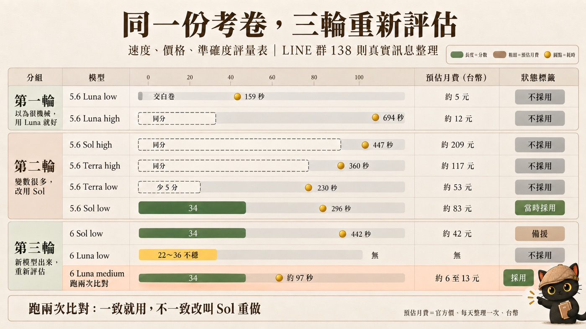

這篇在講什麼
我做了一個自動整理 LINE 群訊息的 AI 小工具，每天都要呼叫模型，每個月要付錢。要用哪個模型，我評估了三輪。
第一輪以為這是機械工作，用便宜的 Luna 就好，結果它交白卷，改用 Sol。第二輪把幾個組合放在同一場考試裡比分數、速度、費用，選了 Sol 開 low。第三輪新模型出來，Sol 更便宜，Luna 也進步了，我又重考一次，這次讓 Luna 考好幾次看它穩不穩，也看它出錯的時候程式抓不抓得到。
最後定案：讓 Luna 跑兩次互相比對，兩次一致就用，不一致才叫 Sol 重做，預估月費從約 83 元降到約 6 至 13 元。這篇把三輪各自怎麼想、怎麼考、踩過什麼坑攤開來，文末附一張評估記錄表，和一段可以直接貼給 AI 的月費試算提示詞。

・你用 AI 做了一個每天或每週自動跑的小工具（整理訊息、分類、摘要、回覆），開始在意每個月要付多少
・你心裡有這個問題：「頂規模型很貴，怎麼把複雜的交給它、其他交給便宜的？」
・你聽說有新模型更便宜或更強，想換，又怕換了之後出錯自己不知道
・你要幫客戶選模型、估月費，需要拿得出分數和費用給對方看
・一個思路：選模型是一件會重複做的事，每次新模型出來，就拿同一份考卷重考一次
・三個考法：同一場考試比分數速度費用、同一個模型考好幾次看穩不穩、看它錯的時候抓不抓得到
・一個做法：便宜模型跑兩次互相比對，不一致才叫貴的模型
・一張評估記錄表，一段可以直接貼給 AI 的月費試算提示詞
我在做的小工具：每天把 LINE 群訊息整理成活動清單
最近做一個 AI 小工具，自動幫 LINE 群整理訊息。
那是一個社團的 LINE 公佈欄群組。例會公告、報名接龍、活動照片、參加心得、閒聊，全部混在同一條時間線上。小工具每天把新訊息讀一遍，整理成一張一張活動卡：哪天、幾點、在哪、誰報名。
它跑在雲端，每天由程式直接呼叫模型（這種用法叫 API，按用量計費），所以用哪個模型，會直接變成每個月的帳單。每次整理，要把整理規則、目前已有的活動、新訊息一起送給模型，大約兩萬多個 token（token 可以想成模型計費用的字數單位）。錢主要跟著「跑幾次」走，訊息多一點少一點影響不大。
模型有貴有便宜，還可以調推理強度（讓模型想久一點或快一點，分 low、medium、high）。每個組合的準確度、速度、費用都不一樣，而且新版本一直在出。所以我算了一下月費，然後開始評估。
先出一份考卷，之後換模型都考同一份
我的做法是先出一份考卷：拿群組裡真實的訊息，自己標好標準答案。
這份考卷是群裡連續八天、138 則訊息，手機號碼先遮掉。我把裡面該抓到的活動一場一場標出來，也放了幾題陷阱，例如長得像活動公告、其實只是講題介紹的訊息，或是別的社團轉貼過來的例會。現在用的這版答案滿分 36 分。
之後不管換模型、換設定，都拿同一份考卷去考，分數才比得起來。換了考卷或改了答案，前後的分數就不能放在一起比。
- 新模型出來，我怎麼知道它對我的工作真的比較好？ 這一段只講我拿考卷來做什麼，那篇講題目、答案、成績三層怎麼分開放，改了答案之後舊分數怎麼處理。
第一輪：以為很機械，用 Luna 就好
我原本預計這是比較機械性的東西，用 Luna 就好。
先說明一下模型的名字。我用的這一家，同一代模型分三級：Sol 最貴，Terra 中間，Luna 最便宜。以 GPT-5.6 來說，Luna 的輸入價格是 Sol 的二十分之一。
考下去才發現，沒有想像中機械，變數很多：
- 同一場活動會被講好幾次，每次補一點新資訊
- 講題介紹寫得跟活動公告很像，但它沒有自己的日期地點
- 有人今天貼的心得，講的是昨天那場活動
- 時段投票的接龍，跟報名的接龍長得一模一樣
- 別的社團的活動被轉貼進來
Luna 開低推理，讀完 138 則訊息，交出一份空的結果，活動、更新、投票全部是空的，等於交白卷。
第二輪：把幾個組合放在同一場考試裡比
第二輪，我把幾個組合放在同一場考試裡比：同一份規則、同一批 138 則訊息、同一份標準答案，六個組合一起考，看分數、速度、費用。
| 組合（GPT-5.6） | 分數（跟 Sol low 比） | 耗時 |
|---|---|---|
| Sol low | 基準 | 289 秒 |
| Terra high | 同分 | 360 秒 |
| Sol high | 同分 | 447 秒 |
| Luna high | 同分 | 694 秒 |
| Terra low | 少 5 分（把講題當成活動） | 230 秒 |
| Luna low | 交白卷 | 159 秒 |
Sol 開 low 分數夠、速度也快，就先用它。
這一輪用的是舊版答案，分數只能在這一輪裡面互相比，不能跟下一輪的分數放在一起。那時候我也算了每個組合的月費，後來發現算錯了，原因寫在後面「踩過的坑」。
- 模型不是越聰明越好：我開始學著算 AI 的 CP 值 這一段只講我這個任務實際怎麼比，那篇講 CP 值為什麼要把品質、時間、金錢三件事一起算。
第三輪：新模型出來，Sol 更便宜，Luna 也進步了
新的模型出來之後，Sol 更便宜，但是 Luna 也進步了，所以我就重新評估一次。
GPT-6 的 Sol，價格是 GPT-5.6 Sol 的一半；GPT-6 的 Luna 又比它便宜很多。價格變了，能力也變了，上一輪的結論就不一定成立。
這一輪多考了兩件事：
- Luna 考好幾次，看它穩不穩。同一份題目、同一個模型，跑兩次也可能得到不一樣的結果，只考一次的分數不能當定論。這一輪 Luna medium 考 6 次、Luna low 考 3 次；Sol 那時各只考 1 次。
- 看它出錯的時候，程式抓不抓得到。小工具每次整理完，會用程式檢查輸出，例如 138 則訊息每一則都要交代去處，數字對不上，這一批就整批不採用。這種錯程式抓得到。可是如果模型漏掉一整場活動，其他欄位都填得好好的，程式就看不出來。
這一輪換成新版答案，分數是 36 分制：該抓到的活動抓到就給分，踩到陷阱就扣分。結果如下：
| 組合 | 考幾次 | 分數 | 每次耗時 | 出錯時程式抓得到嗎 |
|---|---|---|---|---|
| 5.6 Sol low（原本在用） | 1 | 34 | 296 秒 | 通過檢查 |
| 6 Sol low | 1 | 34 | 442 秒 | 通過檢查 |
| 6 Luna medium | 6 | 32、34、34、34、34、34 | 前兩次 96、98 秒（其餘沒記） | 6 次有 1 次沒通過（少交代 1 則訊息），程式抓得到 |
| 6 Luna low | 3 | 22、36、26 | 未記錄 | 3 次都通過檢查，但有兩次漏掉整場活動，程式抓不到 |
6 Luna low 有一次考 36 分滿分。如果只考那一次，會以為它最好。考三次，分數在 22 到 36 之間跳，而且它錯的時候，程式的檢查沒有發現。
6 Luna medium 分數穩，唯一出錯那一次，程式抓得到。
讓 Luna 跑兩次互相比對，兩次一致就用
結果發現，讓 Luna 跑兩次互相比對，反而是這個任務的最優解。兩次一致就用，不一致才叫 Sol 重做。
每天的流程是這樣：
每天晚上 8 點，兩次各自整理同一批新訊息。
新活動比日期與報名人數；已有活動被更新的，比改了哪些欄位，其中日期、地點、費用、狀態要比新值；投票比有幾筆。標題不比，因為同一個模型兩次寫出來的字會不一樣。
兩份都通過檢查而且重點一致，用第一份。不一致，或任一份沒通過檢查，改叫 6 Sol low 重做一次。
比對是程式做的，不用錢。兩份各自獨立整理，重點對不上，就表示這一批訊息 Luna 判斷得不穩，這時候才花錢叫 Sol。不寫程式的話，也可以把兩份結果貼進試算表，把這幾個欄位並排對一下。
| 做法 | 預估月費（台幣） |
|---|---|
| 5.6 Sol low，每天一次（原本） | 約 83 元 |
| 6 Sol low，每天一次 | 約 42 元 |
| 6 Luna medium 跑兩次比對，不一致叫 6 Sol low | 約 6 至 13 元 |
最後一列是一個範圍，因為要看多常叫到 Sol。這個做法有一個切換開關，可以退回「只叫一次模型」，不用改程式。
整套流程我也考過一次：兩份 Luna 各拿 34 分，但當時比對設得比較嚴，判成不一致，就叫了 Sol，Sol 考 36 分。比對設太嚴，會多叫 Sol、多花錢。所以先放寬，有問題再改。上線後看一週叫到 Sol 的比例，太常叫就再放寬，很少出錯就維持。
- 怎麼設計讓兩個 AI 互審？：三種不同程度的審查機制設計 這一段只講同一個便宜模型跑兩次、由程式比對重點，那篇講兩個不同家的 AI 互相審查，要設計到什麼程度。
三輪放在一張表：速度、價格、準確度評量表
三輪的結果放在同一張表。一列一個模型組合，同一條跑道上疊三件事：分數、預估月費、耗時。點任一列可以看明細。
你也可以這樣評估：五個步驟、記錄表與月費提示詞
- 從真實資料取一份考卷，自己標答案。幾十則到一兩百則都可以。標出一定要抓到的，也放幾題你知道 AI 容易搞錯的。
- 每個候選都考同一份，記三件事：分數、花多久、這次花多少錢。考卷和答案不要動，動了就從頭記。
- 重要的候選盡量多考幾次，看最低分，不看最好的那一次。我這次 Sol 各只考了一次，這是還沒補的地方。
- 看它錯的時候抓不抓得到。你的程式抓得到，或你看一眼就發現的錯，可以補救；抓不到的錯，會直接進到結果裡。
- 月費用官方價重算，寫下核對日期。新模型出來，回到第 2 步再考一次。
評估記錄表：一次考試寫一列
| 日期 | 模型與推理強度 | 考卷與答案版本 | 第幾次 | 分數 | 耗時 | 這次花費 | 檢查有沒有過 | 錯了抓得到嗎 |
|---|---|---|---|---|---|---|---|---|
| 2026-09-26 | 6 Luna medium | 138 則／答案 v4 | 1 | 32 | 96 秒 | 0.0102 美元 | 沒過 | 抓得到 |
| （你的日期） | （模型名＋low／medium／high） | （考卷名／答案版本） |
月費試算提示詞：可以直接貼給 AI
評估模型時我踩過的四個坑
有些錯，換模型也救不回來
最早那一版整理規則，四個模型全部錯在同一個地方：把講題介紹當成一場獨立的活動。原因是規則裡根本沒寫「講題不是活動」。那時候換哪個模型都一樣錯，補了規則之後，模型之間才分得出高下。所以看到大家錯同一題，先回頭看規則。
價格表寫錯，月費排序整個不成立
第二輪算月費用的單價，是程式裡一張價格表，那張表的數字寫錯了：Sol 少寫了約三倍，Luna 多寫了約五倍，Terra 也少寫很多。所以第二輪算出來的月費，哪個便宜哪個貴的排序都不對。第三輪我請另一個 AI 幫忙找更省錢的辦法，它去官方頁面逐一核對價格，才發現。之後的規矩是：程式裡的單價要附上官方頁面的核對日期，沒核對過的先用偏高的價格估。
答案版本不同，分數不能放在一起比
第二輪用的是舊版答案，第三輪用的是新版，所以兩輪的分數我沒有直接比。評量表上，第二輪的成績用虛線框標出來，只看它在那一輪跟 Sol low 比是同分還是少幾分。
只考一次會看錯
6 Luna low 三次是 22、36、26。只考到 36 那一次，就會選錯。
這套模型評估做到哪、還沒做到哪
- 標準答案是我一個人判讀的，沒有第二個人複核。分數拿來排順序，不能當成絕對的對錯。
- 樣本是一個群、連續八天、138 則訊息。訊息更雜的群，表現會不會掉下來，還不知道。
- 考試的花費是程式照官方價記的帳；月費是用每次的 token 量和官方價推算的，還沒有一整個月的帳單可以對。
- 第二輪跟第三輪用的答案版本不同，兩輪的分數不能直接比。
- 跑兩次比對的做法 2026-09-26 才上線，叫到 Sol 的比例要看一週才知道。
- 「比對先放寬，有問題再改」是我替自己的工具做的取捨。用在客戶身上，放寬之前要先跟對方講好哪些錯可以接受。
給你的 AI 讀的技術備忘（人可以跳過）
官方價（2026-09-26 核對，每百萬 token，美元，輸入／輸出）
| 模型 | 價格 |
|---|---|
| GPT-5.6 Sol | 4／20 |
| GPT-5.6 Terra | 2／12 |
| GPT-5.6 Luna | 0.2／1.2 |
| GPT-6 Sol | 2／10 |
| GPT-6 Luna | 0.1／0.5 |
- 每次整理：輸入約兩萬多 token（規則、已知活動摘要、新訊息），輸出約 400 token。實測 9/23 至 9/25 每次輸入 21,221 至 22,357 token。
- 月費算法：（輸入 token × 輸入單價 ＋ 輸出 token × 輸出單價）× 每月次數。跑兩次比對＝2 次便宜模型 ＋ 叫到貴模型的比例 × 1 次貴模型。
- 預估月費（每天一次、1 美元約 32 台幣）：5.6 Sol low 約 83 元、6 Sol low 約 42 元、6 Luna medium 跑兩次比對約 6 至 13 元。第一、二輪其他組合用新價格推算：5.6 Sol high 約 209 元、5.6 Terra high 約 117 元、5.6 Terra low 約 53 元、5.6 Luna high 約 12 元、5.6 Luna low 約 5 元，這五筆是推算值。算法：每次輸入約 22,000 token、輸出約 400 token，再加推理 token（9/19 直接呼叫 API 量到 low 約 500、high 約 6,100），乘官方價、每月 30 次、1 美元約 32 台幣。同一算法下 5.6 Sol low 會是約 100 元；83 元與 42 元沿用 9/26 未計推理 token 的估法。兩種算法差約兩成，這些數字只拿來看大小順序。
- 考試實際花費（程式記帳，官方價）：6 Sol low 一次 0.1743 美元；6 Luna medium 每次約 0.0096 至 0.0105 美元；6 Luna low 每次約 0.008 美元。
- 比對的重點欄位：新活動的日期與報名人數（人數由程式數）；更新的活動比改了哪些欄位，其中 status、date、location、fee 四個高風險欄位比值，報名人數也比；投票比筆數。不比標題、備註等長文字與新活動編號。
- 程式檢查的其中一項：交代去處的訊息數要等於送進去的訊息數，對不上整批不採用。
- 切換開關兩個值：pair（跑兩次比對）、single（只叫一次）。
- 這篇提到過的
- 新模型出來，我怎麼知道它對我的工作真的比較好？：這篇用的那份考卷，題目、答案、成績怎麼分三層保存。
- 模型不是越聰明越好：我開始學著算 AI 的 CP 值：這篇三輪都在做的事，背後是品質、時間、金錢一起算。
- 怎麼設計讓兩個 AI 互審？：三種不同程度的審查機制設計：跑兩次比對之外，讓不同家的 AI 互相審查的做法。
- 再往前後延伸
- 如何讓兩個不同的 AI 互相挑錯、自己訂正？：往後一步。頂規模型很貴，怎麼把規劃交給它、其他交給便宜的，那篇是企劃的版本。
- 改完規則，怎麼知道 AI 到底有沒有變乖？：往前一步。這篇第一個坑是「規則沒寫」，那篇講改完規則之後怎麼驗收。
我是江江教練
隱性知識提煉師、AI 應用規劃師。我把自己每天在用的 AI 工作流程寫成文章與技能包，讓不會寫程式的人也能照著做。
如果你也在替自己的 AI 小工具選模型、算月費，歡迎來社群聊。
AI × 知識管理、隱性知識提煉，每月兩場免費線上講座的場次也會先在這裡公布。